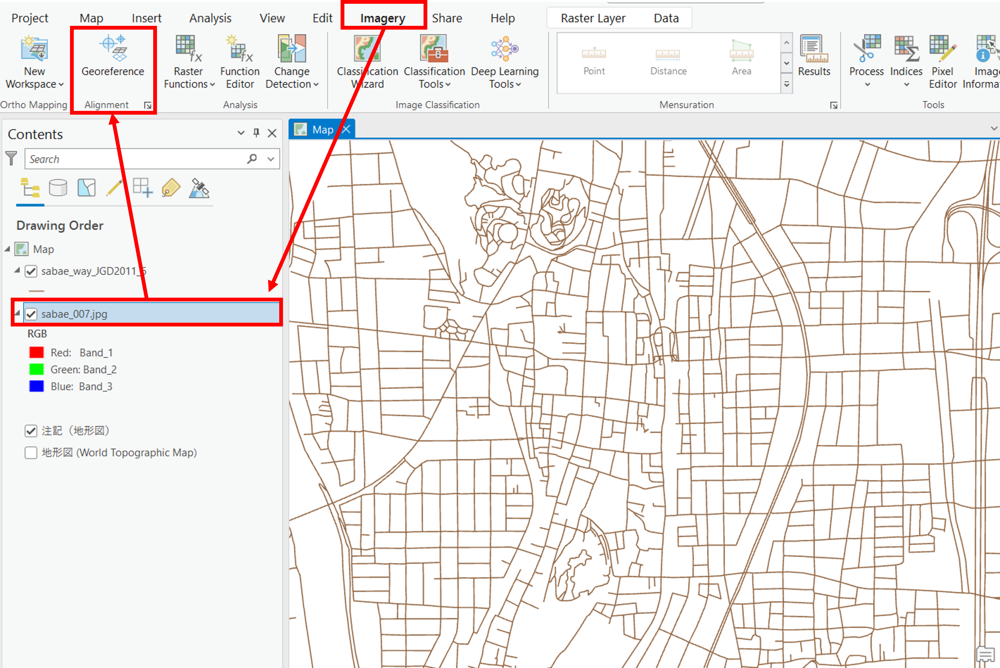
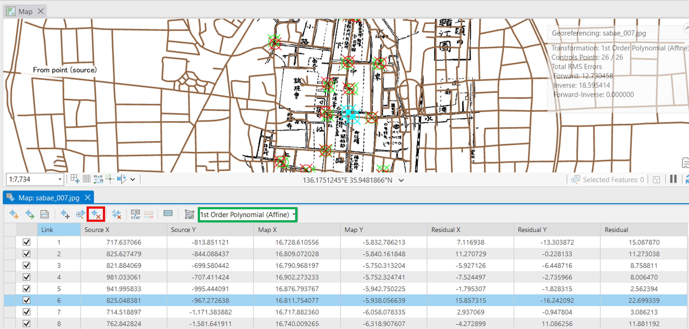
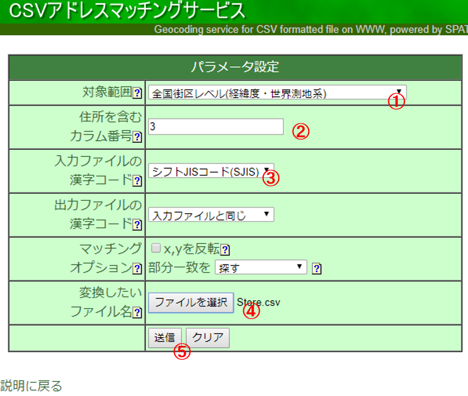
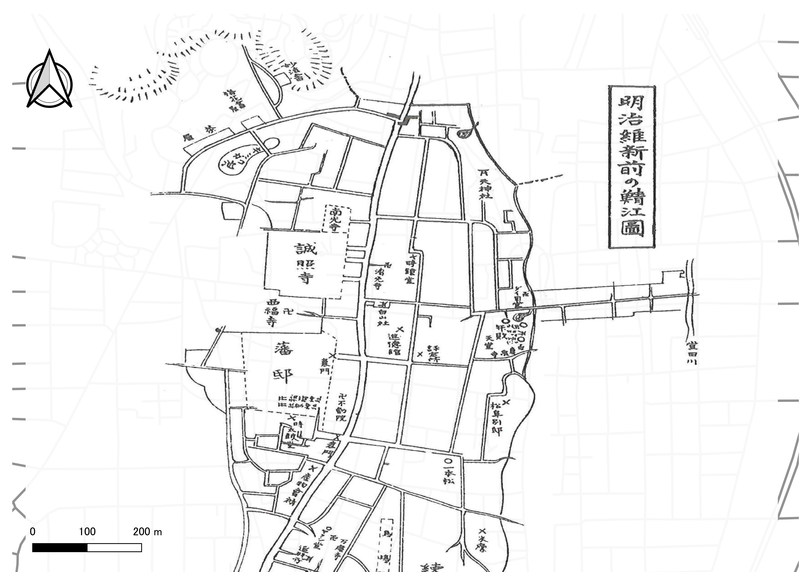

ジオリファレンスとジオコーディング
以下では、電子化した紙地図（地図画像）をジオリファレンスする手法と、ジオコーディングによって住所情報から位置情報を取得する手法を解説しています。
Menu
実習用データ
実習をはじめる前に、Sabaeをダウンロードしてください。
ジオリファレンス
事前作業
- これまでの教材を参考に、sabaeフォルダを接続し、
sabae_way.shpをマップに追加 sabae_way.shpをJGD2011の平面直角座標系の6系に投影変換- 背景地図もJGD2011の平面直角座標系の6系に設定

地図画像の読み込み
Contentsのウィンドウに、sabae_007.jpgを読み込む。ウィンドウがでるが、Yesを選択する。

ジオリファレンスの処理
Imageryをクリックし、地図画像を選択する。次に、Georeferenceをクリックする。

以下のような範囲に地図画面をズームし、次の順でボタンを選択する。

Fit to Displayで地図画像を表示Control Points TableをクリックAdd Control Pointsを選択し、地図画像を道路データに合わせていく
地図画像→GISデータの順で、合致する交差点などを複数箇所指定する。最初の点で間違えた箇所をクリックした場合は、Escキーを押す。地図を移動したい場合は矢印キーを使う。点は地図画像の全体を網羅するように作成する。点を追加すると自動で、画像が補正されていく。この例では、20点ほどコントロールポイントを追加した。コントロールポイントは、画像を網羅するように配置する（Auto Applyを停止したほうが、わかりやすい場合もある。その場合は適宜Applyを実行する）。間違えたGCPを登録した際は、次の説明を確認する。

この例では、1st Order Polynominal (Affine) / 一次多項式（アフィン）となっているが、ゆがみ補正に適した2nd Order Polynominal / 二次多項式なども試し、いくつかの結果を確認する。Residual（残差）が大きいものを消すことで、ジオリファレンスの精度があがる場合もある。不要なGCPは赤枠のアイコンから削除できる。変換方法や残差をチェックしながら、ある程度地図が重なるまで、処理を繰り返す。※ゆがみのある地図画像をGISデータと完全に一致させることは難しい

ArcGIS Proでのジオリファレンスの詳細は、ESRI社のジオリファレンスの概要、ジオリファレンス ツールなどのページを参照。変換方法については、 ESRIジャパン株式会社 公式ブログ・ArcGIS Pro の画像処理機能紹介 その 1 ～ジオリファレンス～で簡潔に紹介されている。
次の手順でジオリファレンスの処理を完了し、結果を地図としてレイアウトする。

Save as Newから、書き出しの座標系を設定した後、tiff画像として結果をエクスポートExport Control Pointsからコントロールポイントを保存SaveをクリックClose Georeferenceを選択
作成したデータを地図として、レイアウトする。レイアウトの方法は、ArcGIS Proビギナーズマニュアルを参考にする。
ジオコーディング
ジオコーディングは、住所や緯度経度などの情報から、GISで扱えるデータ等を作成する手法です。以下では、鯖江市内の店舗のデータ(sabae_store.csv)を用いて、住所と経緯度の情報からジオコーディングする手法として、CSVアドレスマッチングサービスについて解説しています。
CSVアドレスマッチングサービスを利用する
東京大学空間情報科学研究センターが提供するCSVアドレスマッチングサービスを利用して、住所から緯度経度を求めることができる。以下では、その手法について解説する。
sabae_store.csvの住所情報をもとに以下の手順で、ジオコーディングを実行する。 
- 全国街区レベル（緯経度・世界測地系）を選択する。
- 住所を含むカラムに
3を入力（エクセルでみたときの住所が入っている箇所に相当する）する。 - シフトJISコード（SJIS）を選択する。
- 避難所をまとめたCSVを選択する。
- 送信をクリックする。その後、保存のウインドウが表示されるため、データを保存する。
- ダウンロードしたデータをエクセルなどで開き、住所と位置情報の特定精度を確認する。
ArcGISで緯度経度つきのCSVデータを表示する
ArcGIS Proビギナーズマニュアルを参考に、CSVデータを読み込み、空間データの座標変換（JGD2011 平面直角の6系）し、地図をレイアウトする。
課題
以下の課題のうちいずれかを実施し、それぞれの地図を作成してください。
実習用データ
以下から、実習用データを入手する。
- 課題1 鯖江市_古地図006
- 課題2 裾野市_AED設置施設
課題1 ジオリファレンス
平面直角座座標系に変換したsabae_way.shpを基準に、地図画像をジオリファレンスする。
完成例

課題2 ジオコーディング
裾野市_AED設置施設を用いて、ジオコーディング（アドレスマッチング)を行い地図を作成して下さい。背景地図は、ArcGIS Proビギナーズマニュアルを参考に地理院タイルから選択してください。
完成例